Two ways to find your voice. Sesinizi bulmanın iki yolu. Dos formas de encontrar tu voz.
Sesla is an AAC communication board for people who can't speak — and a daily Speech Practice coach for people learning to speak more clearly. Same app, same price, choose at setup. Sesla iki kişilik bir uygulama: konuşamayanlar için bir AAC iletişim panosu ve daha net konuşmak isteyenler için bir günlük konuşma koçu. Aynı uygulama, aynı fiyat, ilk açılışta seçiyorsunuz. Sesla es un tablero de comunicación AAC para personas que no pueden hablar — y un entrenador diario de práctica del habla para quienes aprenden a hablar con más claridad. La misma app, el mismo precio, eliges al configurar.
Android: full app (AAC + Speech Practice) on Google Play. iOS: Speech Practice only, on the App Store — AAC for iPad is in the works. Android: tam uygulama (AAC + Konuşma Pratiği) Google Play'de. iOS: şimdilik yalnızca Konuşma Pratiği, App Store'da — iPad için AAC sürümü yolda. Android: app completa (AAC + Práctica del Habla) en Google Play. iOS: de momento solo Práctica del Habla, en la App Store — AAC para iPad en preparación.
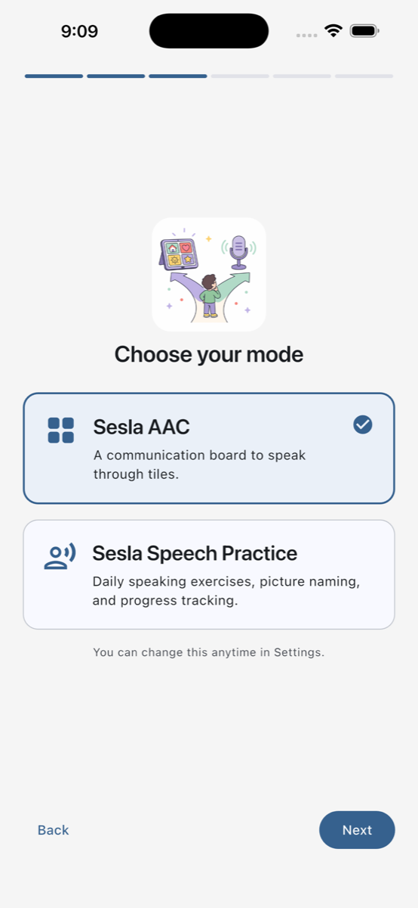
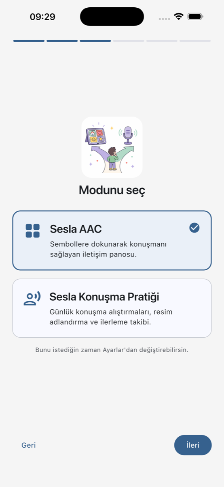
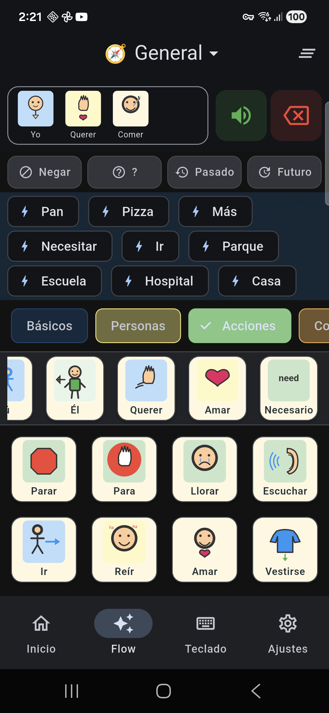
Two modes, one app İki mod, tek uygulama Dos modos, una app
When you first open Sesla you pick the mode that fits — and you can switch any time in Settings. Buying Plus once unlocks the unlimited tier in whichever mode you choose. Sesla'yı ilk açtığınızda size uygun modu seçiyorsunuz; istediğiniz an Ayarlar'dan değiştirebilirsiniz. Plus'ı bir kez aldığınızda hangi modda kullanırsanız kullanın sınırsız sürüm açılır. Cuando abres Sesla por primera vez eliges el modo que encaja — y puedes cambiarlo cuando quieras en Ajustes. Comprar Plus una vez desbloquea el nivel ilimitado en el modo que elijas.
On iOS, only Speech Practice is available right now — it ships as a standalone app called Sesla Speech Practice. The full two-mode app (AAC + Speech Practice) is on Android today; an iPad-class AAC build is coming. iOS'ta şu an yalnızca Konuşma Pratiği var — Sesla Konuşma Pratiği adıyla bağımsız bir uygulama olarak yayında. İki modlu tam sürüm (AAC + Konuşma Pratiği) bugün Android'de; iPad için AAC sürümü yolda. En iOS, por ahora solo está disponible Práctica del Habla — se publica como una app independiente llamada Sesla Speech Practice. La app completa con los dos modos (AAC + Práctica del Habla) está hoy en Android; una versión AAC para iPad llegará después.
Sesla AAC Sesla AAC Sesla AAC
A symbol-based communication board for non-speaking children & adults. Tap tiles, build sentences, hear them spoken on-device. 540+ symbols across 17 categories, real Turkish & English grammar, free typing tab, custom symbols from your photos. Konuşamayan çocuklar ve yetişkinler için sembol tabanlı iletişim panosu. Tuşlara dokun, cümle kur, cihaz seslendirsin. 17 kategoride 540+ sembol, gerçek Türkçe ve İngilizce dilbilgisi, serbest yazım sekmesi, fotoğraflarınızdan özel semboller. Un tablero de comunicación con símbolos para niños y adultos que no hablan. Toca casillas, forma frases y escuchálas en el dispositivo. Más de 540 símbolos en 17 categorías, gramática real en español, turco e inglés, pestaña de escritura libre y símbolos personalizados desde tus fotos.
Sesla Speech Practice Sesla Konuşma Pratiği Sesla Práctica del Habla
Daily speaking exercises for people working on clarity, recovery, or a second language: structured lessons, Naming Practice with progressive cueing, free Sandbox recording, and a weekly tracker that respects bad days. Daha net konuşmak, iyileşme sürecinde olan ya da yeni bir dil öğrenenler için günlük alıştırmalar: yapılandırılmış dersler, kademeli ipuçlarıyla Resim Adlandırma, serbest kayıt ve kötü günleri anlayan haftalık takip. Ejercicios diarios de habla para quienes trabajan la claridad, la recuperación o un segundo idioma: lecciones estructuradas, denominación de imágenes con pistas progresivas, grabación libre y un seguimiento semanal que respeta los días malos.
What's inside Neler var? Qué incluye
Curated symbol library Özenle seçilmiş semboller Biblioteca de símbolos curada
540+ Turkish and English symbols across 17 categories, hand-picked and culturally filtered. Hundreds drawn just for Sesla. 17 kategoride 540'tan fazla Türkçe ve İngilizce sembol, kültüre uygun şekilde elenmiş. Yüzlercesi Sesla için özel çizildi. Más de 540 símbolos en español, turco e inglés en 17 categorías, seleccionados y filtrados culturalmente. Cientos dibujados solo para Sesla.
Real Turkish grammar Gerçek Türkçe dilbilgisi Gramática de verdad
Verbs conjugate, nouns decline, possessives stack — vowel harmony, loanword exceptions, conditional and aorist included. Fiiller çekilir, isimler hâl alır, iyelik ekleri yığılır — ünlü uyumu, yabancı sözcük istisnaları, dilek-şart ve geniş zaman dahil. Los verbos se conjugan, los sustantivos concuerdan, los plurales y artículos se ajustan — con apoyo morfológico real en español, además de turco e inglés.
Daily Practice lessons Günlük pratik dersleri Lecciones de práctica diarias
Short, structured speaking lessons with a Listen → Record → Self-rate loop. Weekly tracker, gentle streaks, a "bad day" button that doesn't punish you. Dinle → Kaydet → Kendini değerlendir döngüsüyle kısa ve yapılandırılmış dersler. Haftalık takip, nazik seriler ve sizi cezalandırmayan bir "kötü gün" düğmesi. Lecciones de habla cortas y estructuradas con un ciclo Escuchar → Grabar → Autoevaluar. Seguimiento semanal, rachas amables y un botón de "día malo" que no te castiga.
Naming Practice Resim Adlandırma Denominación de imágenes
See an image, say its name. Progressive cueing helps when the word is on the tip of your tongue. Add your own photos to practice the words that matter at home. Bir resim gör, adını söyle. Sözcük dilinizin ucunda olduğunda kademeli ipuçları yardımcı olur. Evde önemli olan kelimeler için kendi fotoğraflarınızı ekleyin. Mira una imagen, di su nombre. Las pistas progresivas ayudan cuando la palabra está en la punta de la lengua. Añade tus propias fotos para practicar las palabras que importan en casa.
Free typing & search Serbest yazım ve arama Escritura libre y búsqueda
Type any phrase that isn't on the board and have it spoken instantly with on-device TTS — or search the entire symbol library by name. Panoda olmayan cümleleri yazın, cihazdaki ses sentezi anında seslendirsin — ya da tüm sembol kütüphanesinde ada göre arayın. Escribe cualquier frase que no esté en el tablero y escrúchala al instante con la voz del dispositivo — o busca en toda la biblioteca de símbolos por nombre.
Custom symbols from photos Fotoğraflardan özel semboller Símbolos personalizados desde fotos
Tap the dashed "+" tile in any category, snap or pick a photo, give it a label — Sesla treats it like a built-in symbol. Her kategorinin sonundaki kesik çizgili "+" tuşuna dokunun, fotoğraf çekin ya da seçin, ad verin — Sesla onu hazır sembol gibi kullanır. Toca la casilla "+" punteada en cualquier categoría, haz o elige una foto y ponle una etiqueta — Sesla la trata como un símbolo integrado.
Per-user profiles Kullanıcı profilleri Perfiles por usuario
Different language, mode, grid size, voice, and accessibility settings for every person who shares the device. Cihazı paylaşan her kişi için ayrı dil, mod, ızgara boyutu, ses ve erişilebilirlik ayarları. Idioma, modo, tamaño de cuadrícula, voz y ajustes de accesibilidad distintos para cada persona que comparte el dispositivo.
Built for access Erişilebilirlik öncelikli Pensado para el acceso
Dwell selection, reduced motion, screen reader support, dark mode, and high-contrast theme. Bekleme ile seçim, azaltılmış hareket, ekran okuyucu desteği, koyu mod ve yüksek kontrast teması. Selección por permanencia, movimiento reducido, compatibilidad con lectores de pantalla, modo oscuro y tema de alto contraste.
Privacy by default Varsayılan olarak gizli Privacidad por defecto
No accounts, no cloud sync, no analytics. Your data — including practice recordings — stays on the device. Period. Hesap yok, bulut senkronizasyonu yok, analitik yok. Pratik kayıtları dahil verileriniz cihazda kalır. Nokta. Sin cuentas, sin sincronización en la nube, sin analíticas. Tus datos — incluidas las grabaciones de práctica — se quedan en el dispositivo. Punto.
A look inside İçeriden bir bakış Una mirada dentro
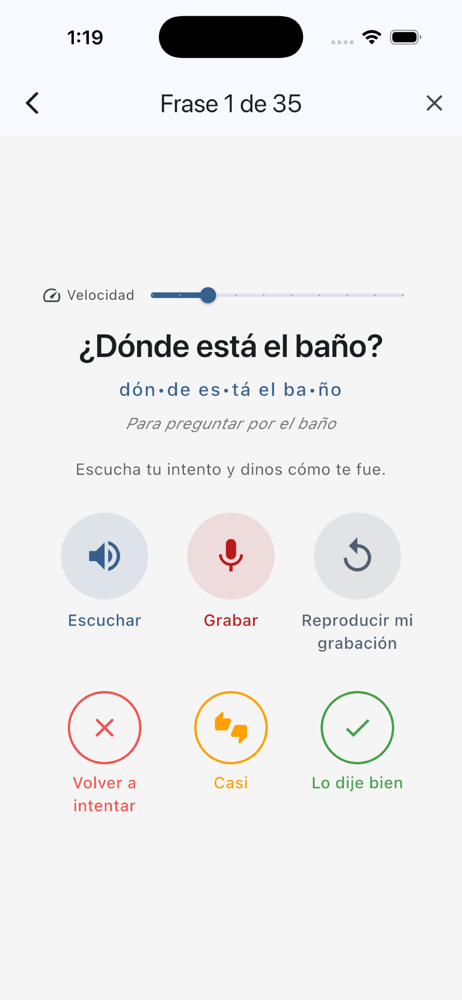
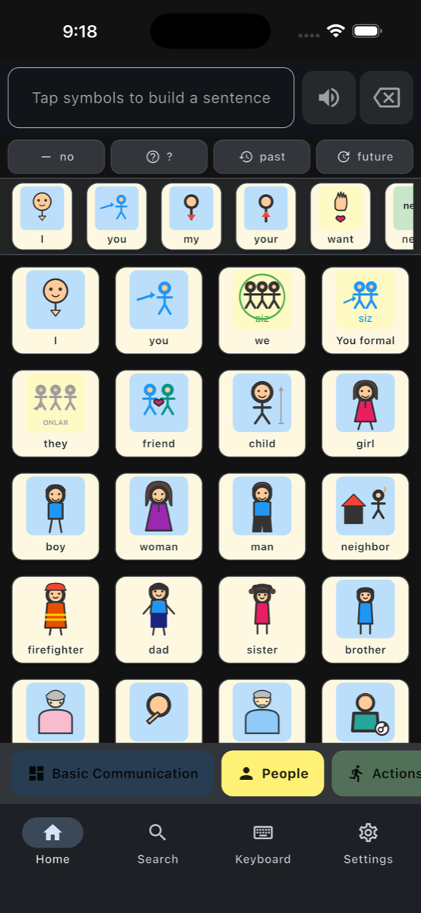
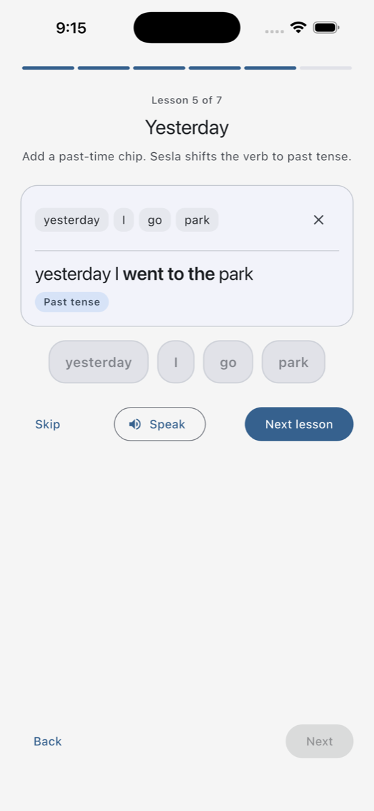
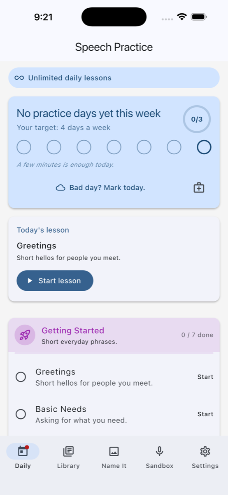
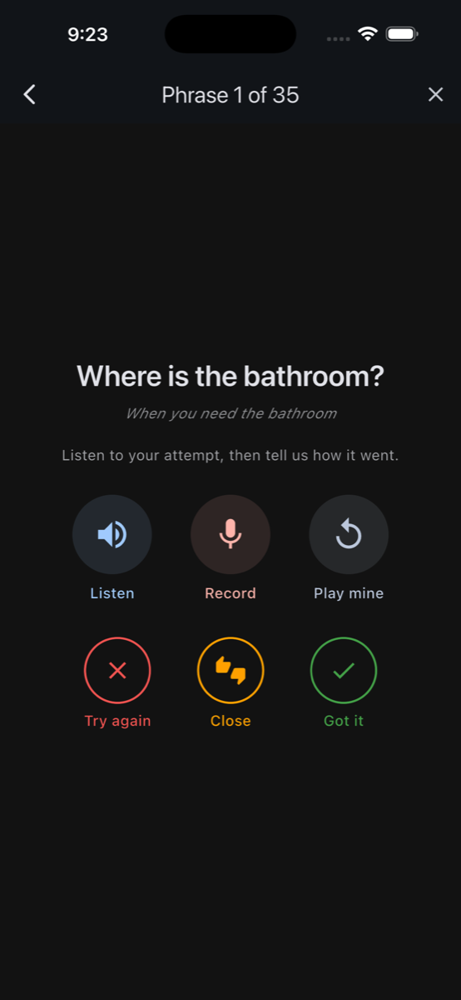
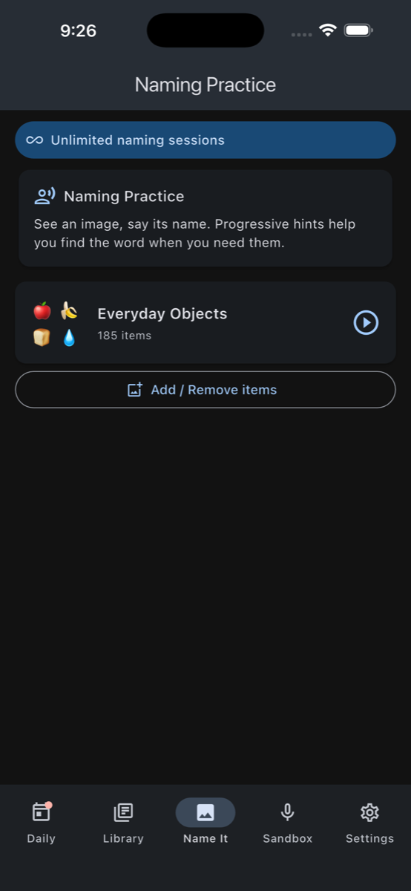
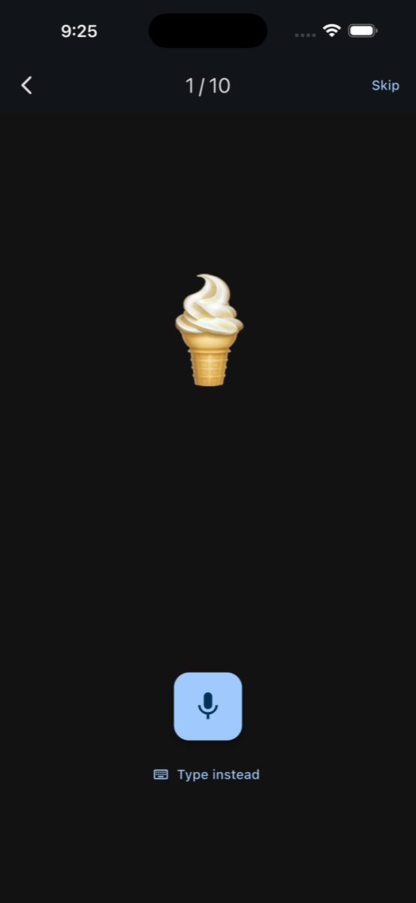

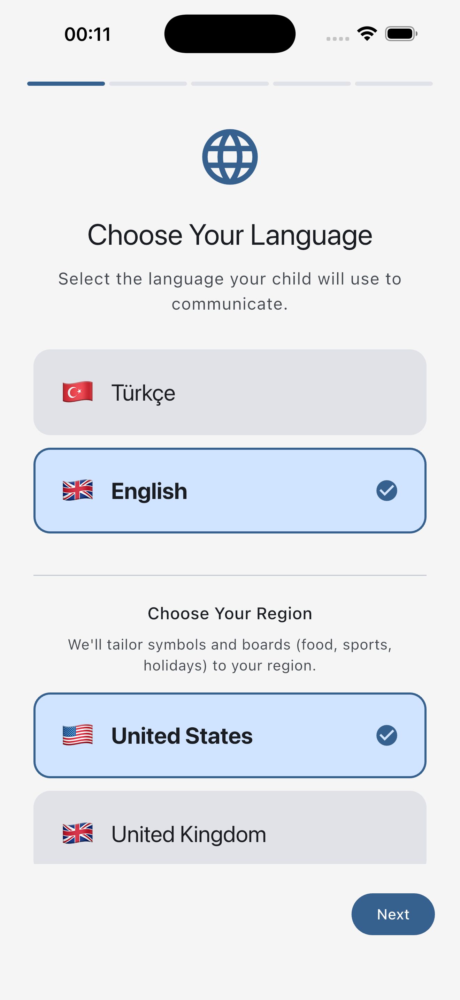
About Hakkında Acerca de
Sesla is built by Gökhan Oğuz, the original creator of Konuşan Parmaklar, Turkey's first AAC app. After years away from the field, the tools — fast on-device speech, mature symbol libraries, modern UI frameworks — finally caught up with the idea. Sesla is the rebuild it always deserved.
Sesla, Türkiye'nin ilk AAC uygulaması olan Konuşan Parmaklar'ın geliştiricisi Gökhan Oğuz tarafından hazırlanıyor. Aradan geçen on dört yılda cihaz üstü ses sentezi, olgun sembol kütüphaneleri ve modern arayüz teknolojileri o ilk fikre nihayet yetişti. Sesla, Konuşan Parmaklar'ın hep hak ettiği yeniden doğuşu.
Sesla está hecha por Gökhan Oğuz, creador original de Konuşan Parmaklar, la primera app AAC de Turquía. Tras años fuera del campo, las herramientas — voz rápida en el dispositivo, bibliotecas de símbolos maduras, frameworks de interfaz modernos — por fin alcanzaron la idea. Sesla es la reconstrucción que siempre mereció.